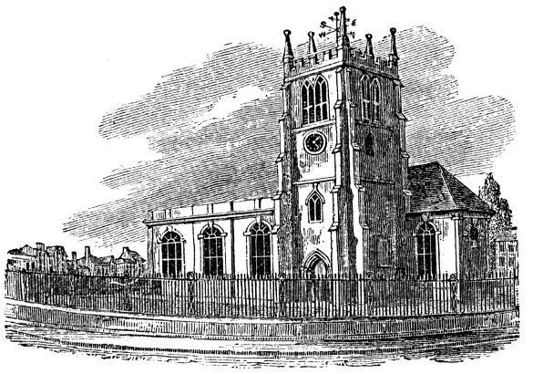

On 9 July 1735, Johnson married Elizabeth “Tetty” Porter at St Werburgh’s Church in Derby. The Porter family did not approve of the match, partly because Johnson, aged 25, was 21 years younger than his bride. Her marriage to Johnson so disgusted her son that he reportedly severed all relations with her.